All functions
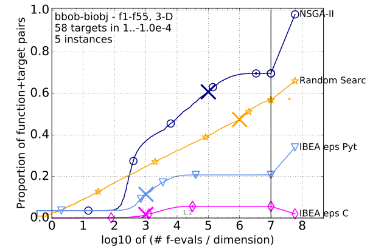1-separable 1-separable
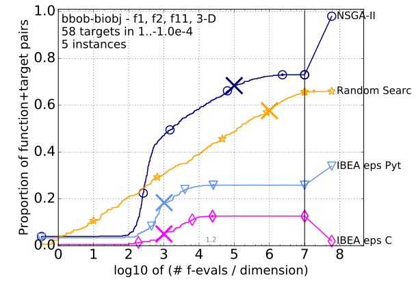1-separable 2-moderate
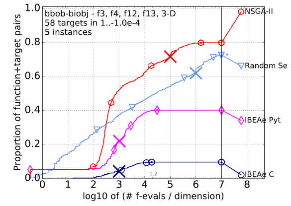1-separable 3-ill-conditioned
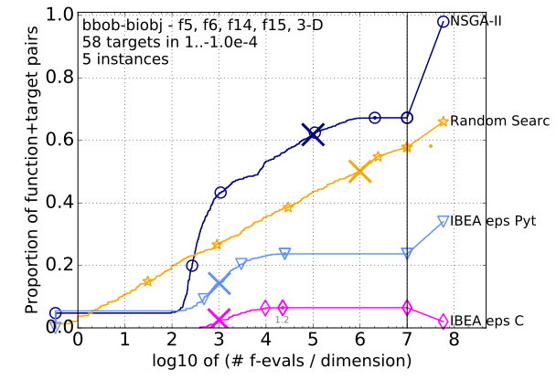1-separable 4-multi-modal
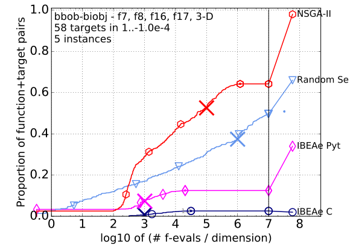1-separable 5-weakly-structured
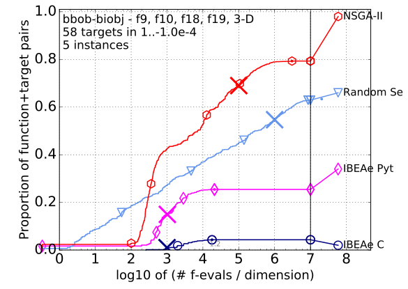2-moderate 2-moderate
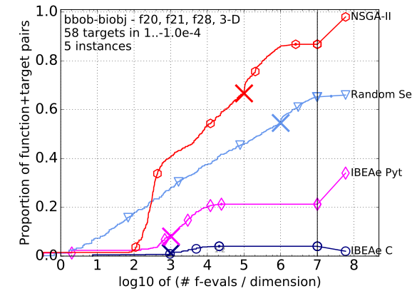2-moderate 3-ill-conditioned
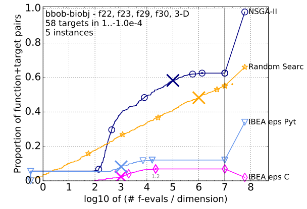2-moderate 4-multi-modal
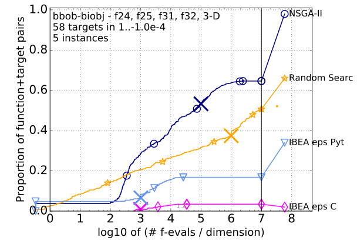2-moderate 5-weakly-structured
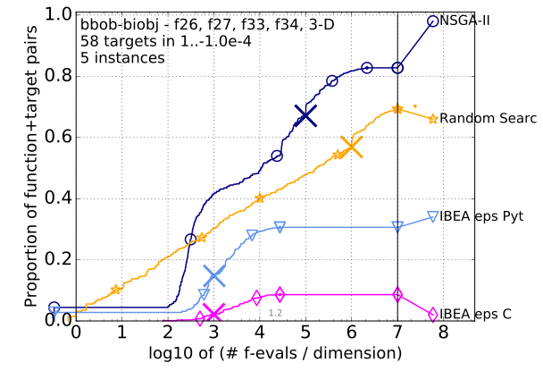3-ill-conditioned 3-ill-conditioned
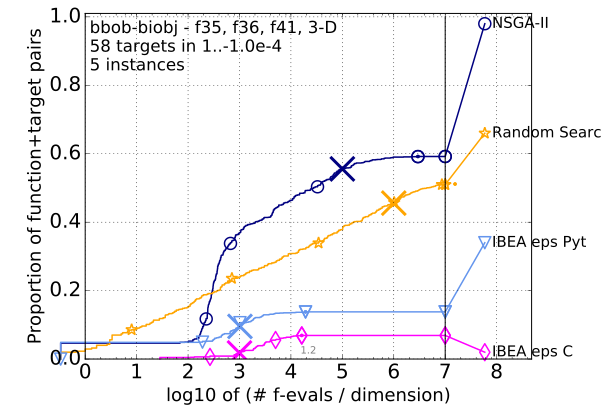3-ill-conditioned 4-multi-modal
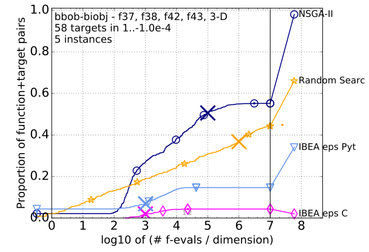3-ill-conditioned 5-weakly-structured
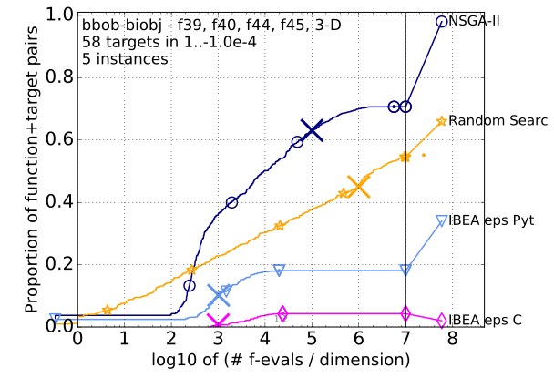4-multi-modal 4-multi-modal
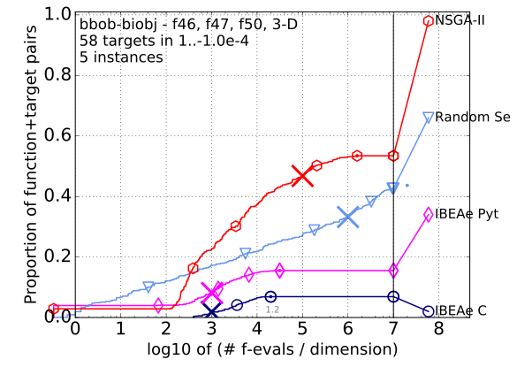4-multi-modal 5-weakly-structured
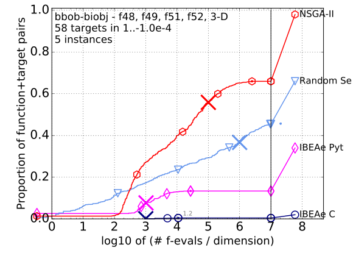5-weakly-structured 5-weakly-structured
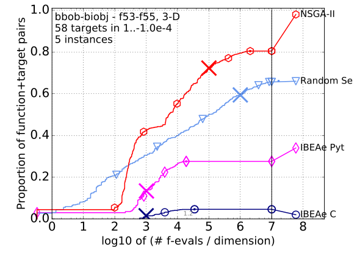" Bootstrapped empirical cumulative distribution of the number of objective function evaluations divided by dimension (FEvals/DIM) for 58 targets with target precision in $\{-10^{-4}, -10^{-4.2}, $ $-10^{-4.4}, -10^{-4.6}, -10^{-4.8}, -10^{-5}, 0, 10^{-5}, 10^{-4.9}, 10^{-4.8}, \dots, 10^{-0.1}, 10^0\}$ for all functions and subgroups in 3-D.